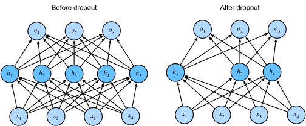

9. Neural Network
9.1. neuron
a neuron takes input \(x \in \mathbb{R}^{d}\), multiply \(x\) by weights \(w\) and add bias term \(b\), finally use a activation function \(g\).
that is:
\[f(x) = g(w^{T}x + b)\]
it is analogous to the functionality of biological neuron.

some useful activation function:
\[\begin{split}
\begin{equation}
\begin{split}
\text{sigmoid:}\quad &g(z) = \frac{1}{1 + e^{-z}} \\
\text{tanh:}\quad &g(z) = \frac{e^{z}-e^{-z}}{e^{z} + e^{-z}} \\
\text{relu:}\quad &g(z) = max(z,0) \\
\text{leaky relu:}\quad &g(z) = max(z, \epsilon{z})\ ,\ \epsilon\text{ is a small positive number}\\
\text{identity:}\quad &g(z) = z
\end{split}
\end{equation}
\end{split}\]
linear regression’s forward process is a neuron with identity activation function.
logistic regression’s forward process is a neuron with sigmoid activation function.
9.2. neural network
building neural network is analogous to lego bricks: you take individual bricks and stack them together to build complex structures.

we use bracket to denote layer, we take the above as example
\([0]\) denote input layer, \([1]\) denote hidden layer, \([2]\) denote output layer
\(a^{[l]}\) denote the output of layer \(l\), set \(a^{[0]} := x\)
\(z^{[l]}\) denote the affine result of layer \(l\)
we have:
\[z^{[l]} = W^{[l]}a^{[l-1]} + b^{[l]}\]
\[a^{[l]} = g^{[l]}(z^{[l]})\]
where \(W^{[l]} \in \mathbb{R}^{d[l] \times d[l-1]}\), \(b^{[l]} \in \mathbb{R}^{d[l]}\).
9.3. weight decay
recall that to mitigate overfitting, we use \(l_{2}\) and \(l_{1}\) regularization in linear and logistic regression.
weight decay is a alias of \(l_{2}\) regularization, can be generalize to neural network, we concatenate \(W^{[l]}\) and flatten it to get \(w\) in this setting.
first adding \(l_{2}\) norm penalty:
\[J(w,b) = \sum_{i=1}^{n}l(w, b, x^{(i)}, y^{(i)}) + \frac{\lambda}{2}\left \| w \right \|^{2} \]
then by gradient descent, we have:
\[\begin{split}
\begin{equation}
\begin{split}
w:=& w-\eta\frac{\partial}{\partial w}J(w, b) \\
=& w-\eta\frac{\partial}{\partial w}\left(\sum_{i=1}^{n}l(w, b, x^{(i)}, y^{(i)}) + \frac{\lambda}{2}\left \| w \right \|^{2}\right) \\
=& (1 - \eta\lambda)w - \eta\frac{\partial}{\partial w}\sum_{i=1}^{n}l(w, b, x^{(i)}, y^{(i)})
\end{split}
\end{equation}
\end{split}\]
multiply by \((1 - \eta\lambda)\) is weight decay.
often we do not calculate bias term in regularization, so does weight decay.
9.4. dropout
to strength robustness through perturbation, we can deliberately add perturbation in traning, dropout is one of that skill.
we actually do the following in hidden neuron:
\[\begin{split}
a_{dropout} =
\begin{cases}
0 &\text{with probability }p \\
\frac{a}{1-p} &\text{otherwise}
\end{cases}
\end{split}\]
this operation randomly dropout neuron with probability \(p\) and keep the expectation unchanged:
\[E(a_{dropout}) = E(a)\]
depict this process below:

one more thing: we do not use dropout in predicting.
9.5. prerequesities for back-propagation
suppose in forward-propagation \(x \to y \to l\), where \(x \in \mathbb{R}^{n}\), \(y \in \mathbb{R} ^{m}\), loss \(l \in \mathbb{R}\).
then:
\[\begin{split}
\frac{\partial l}{\partial y} = \begin{bmatrix}
\frac{\partial l}{\partial y_{1}} \\
...\\
\frac{\partial l}{\partial y_{m}}
\end{bmatrix}
\quad
\frac{\partial l}{\partial x} = \begin{bmatrix}
\frac{\partial l}{\partial x_{1}} \\
...\\
\frac{\partial l}{\partial x_{n}}
\end{bmatrix}
\end{split}\]
by total differential equation:
\[
\frac{\partial l}{\partial x_{k}} = \sum_{j=1}^{m}\frac{\partial l}{\partial y_{j}}\frac{\partial y_{j}}{\partial x_{k}}
\]
then we can connect \(\frac{\partial l}{\partial x}\) and \(\frac{\partial l}{\partial y}\) by:
\[\begin{split}
\frac{\partial l}{\partial x} = \begin{bmatrix}
\frac{\partial l}{\partial x_{1}} \\
...\\
\frac{\partial l}{\partial x_{n}}
\end{bmatrix}
=
\begin{bmatrix}
\frac{\partial y_{1}}{\partial x_{1}} & ... & \frac{\partial y_{m}}{\partial x_{1}}\\
\vdots & \ddots & \vdots \\
\frac{\partial y_{1}}{\partial x_{n}}& .... & \frac{\partial y_{m}}{\partial x_{n}}
\end{bmatrix}
\begin{bmatrix}
\frac{\partial l}{\partial y_{1}} \\
...\\
\frac{\partial l}{\partial y_{m}}
\end{bmatrix}
=
(\frac{\partial y}{\partial x})^{T}\frac{\partial l}{\partial y}
\end{split}\]
here \(\frac{\partial y}{\partial x}\) is the jacobian matrix.
unlike other activation functions, calculate softmax depend on other neurons, so jacobian of softmax.
\[
\frac{\partial a_{i}}{\partial z_{j}} = \frac{\partial}{\partial z_{j}}\left(\frac{exp(z_{i})}{\sum_{s=1}^{k}exp(z_{s})}\right)
\]
it is easy to check the jacobian of matrix-multiplication:
\[\frac{\partial Mx}{\partial x} = M\]
9.6. back-propagation
gradient descent update rule:
\[W^{[l]} = W^{[l]} - \alpha\frac{\partial{L}}{\partial{W^{[l]}}}\]
\[b^{[l]} = b^{[l]} - \alpha\frac{\partial{L}}{\partial{b^{[l]}}}\]
to proceed, we must compute the gradient with respect to the parameters.
we can define a three-step recipe for computing the gradients as follows:
1.for output layer, we have:
\[
\frac{\partial L(\hat{y}, y)}{\partial z^{[N]}} = (\frac{\partial \hat{y}}{\partial z^{[N]}})^{T}\frac{\partial L(\hat{y}, y)}{\partial \hat{y}}
\]
if \(g^{[N]}\) is softmax.
\[
\frac{\partial L(\hat{y}, y)}{\partial z^{[N]}} = \frac{\partial L(\hat{y}, y)}{\partial \hat{y}} \odot {g^{[N]}}'(z^{[N]})
\]
if not softmax.
the above computations are all straight forward.
2.for \(l=N-1,...,1\), we have:
\[z^{[l + 1]} = W^{[l + 1]}a^{[l]} + b^{[l + 1]}\]
so by our prerequesities:
\[
\frac{\partial L}{\partial a^{[l]}} = (\frac{\partial z^{[l+1]}}{\partial a^{[l]}})^{T}\frac{\partial L}{\partial z^{[l+1]}} = (W^{[l+1]})^{T}\frac{\partial L}{\partial z^{[l+1]}}
\]
we also have:
\[a^{[l]} = g^{[l]}z^{[l]}\]
we do not use softmax activation in hidden layers, so the dependent is direct:
\[\frac{\partial L}{\partial z^{[l]}} = \frac{\partial L}{\partial a^{[l]}} \odot {g^{[l]}}'(z^{[l]})\]
combine two equations:
\[\frac{\partial L}{\partial z^{[l]}} = (W^{[l+1]})^{T}\frac{\partial L}{\partial z^{[l+1]}} \odot {g^{[l]}}'(z^{[l]})\]
3.final step, because:
\[z^{[l]} = W^{[l]}a^{[l - 1]} + b^{[l]}\]
so:
\[\frac{\partial L}{\partial W^{[l]}} = \frac{\partial L}{\partial z^{[l]}}(a^{[l - 1]})^{T}\]
\[\frac{\partial L}{\partial b^{[l]}}=\frac{\partial L}{\partial z^{[l]}}\]
9.7. xavier initialization
to mitigate vanishing and exploding gradient, to insure breaking symmtry, we should carefully initialize weights.
consider a fully connected layer without bias term and activation function:
\[o_{i} = \sum_{j=1}^{n_{in}}w_{ij}x_{j}\]
suppose \(w_{ij}\) draw from a distribution of 0 mean and \(\sigma^{2}\) variance, not necessarily guassian.
suppose \(x_{j}\) draw from a distribution of 0 mean and \(\gamma^{2}\) variance, all \(w_{ij}, x_{j}\) are independent.
then mean of \(o_{i}\) is of course 0, variance:
\[\begin{split}
\begin{equation}
\begin{split}
Var[o_{i}] =& E[o_{i}^{2}] - (E[o_{i}])^{2}\\
=&\sum_{j=1}^{n_{in}}E[w_{ij}^{2}x_{j}^{2}] \\
=&\sum_{j=1}^{n_{in}}E[w_{ij}^{2}]E[x_{j}^{2}] \\
=&n_{in}\sigma^{2}\gamma^{2}
\end{split}
\end{equation}
\end{split}\]
to keep variance fixed, we need to set \(n_{in}\sigma^{2}=1\).
consider back-propagation, we have:
\[\frac{\partial L}{\partial x_{j}} = \sum_{i=1}^{n_{out}}w_{ij}\frac{\partial L}{\partial o_{i}}\]
so by the same inference, we need to set $\(n_{out}\sigma^{2} = 1\)$.
we cannot satisfy both conditions simutaneously, we simply try to satisfy:
\[\frac{1}{2}(n_{in} + n_{out})\sigma^{2} = 1 \ \text{ or }\ \sigma = \sqrt{\frac{n_{in} + n_{out}}{2}}\]
this is the reasoning under xavier initialization.